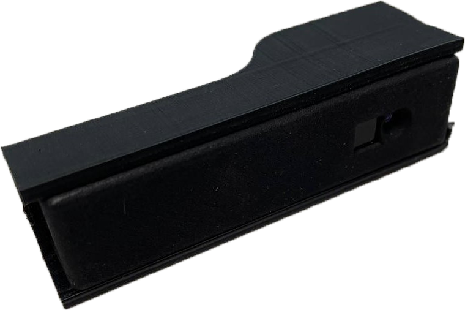

Hardware & Software requirements
The SmartLock solution uses different requirements, both software and hardware. In this section all these needs will be explained.
Hardware requirements
AMD/Xilinx Boards
The SmartLock solution proposed here was built on two different AMD/Xilinx boards:
-
Arty Z7-20: The Arty Z7 is a ready-to-use development platform designed around the Zynq 7000 System-on-Chip from AMD. The Zynq 7000 architecture tightly integrates a dual-core, 650 MHz ARM Cortex-A9 processor with AMD 7 series Field Programmable Gate Array (FPGA) logic. For more information, please visit the official website;

Fig. 1 - Arty Z7-20
-
Kria KV260: The KV260 is built for advanced vision application development without requiring complex hardware design knowledge. For more information, please visit the official website;

Fig. 2 - Kria KV260
2D and 3D Cameras
The architecture of SmartLock solution is based on two type of USB camera, one to extract 3D face features and a 2D one to detect and recognize the person in front of it. To run the solution you need:
-
2D Camera: Logitech C505 or Logitech C310HD (you can use the USB camera of your choice, but these ones are strongly recommended);


Logitech C310HD Logitech C505 -
3D Camera: PMD Flexx2_VGA from PMD Tech

Miscellaneous
Some other miscellaneous are required:
- MicroSD card: it must be greater than or equal to 16GB (32GB if you are going to run the demo into the Kria KV260 demo);
- MicroSD to USB adapter: to burn the image;
- USB Type-C/Type-A: to plug in the 3D camera into the board;
- Ethernet cable: it is needed for board internet connection;
- PC/Laptop: to start the demo;
- Router: to know the IP address of the board;
- Tripod: with clamping mechanism to hold 2D and 2D cameras (this is an example);
Optional (only for Kria KV260 board):
- Full-HD HDMI Monitor and HDMI cable: to show the GUI directly on the monitor plugged into the Kria KV260 board. In this case, you have to plug in the Full-HD HDMI monitor (1920x1080p) into the Kria KV260 HDMI port and work directly on the board's graphic interface;
- Keyboard and mouse kit: to run the commands into the Kria board;
Software requirements
There are some software that need to be installed into your PC in order to run the solution successfully. First of all, you need to have at least 22GB free on your disk in order to download the image to be burnt (it is more or less 19GB big). To burn the image, you need:
- 7Zip: to unarchive the downloaded image files;
- Balena Etcher: to burn the image. You can use one of your choice, but this one is strongly recommended;
- SSH Terminal: to connect to the board of your choice. If you are running the demo with a Windows PC, PuTTY or TeraTerm are recommended. Otherwise, if you are running on Linux, you can use the integrated terminal;
Windows requirements
If you choose to run the demo into the Kria KV260 board and you are running on a Windows PC, you need also the Xming Server in order to see the graphic user interface of the software. In this case, we show below how to set up Xming Server under PuTTY software. Please refer to the Xming Server website to know how to install it.
First of all, open the PuTTY software and, in the list at the left in the main page, open Connection, click SSH → X11, check the Enable X11 forwarding and in the X display location field write localhost:0, as show in the image below.
PuTTY X11 port forwarding